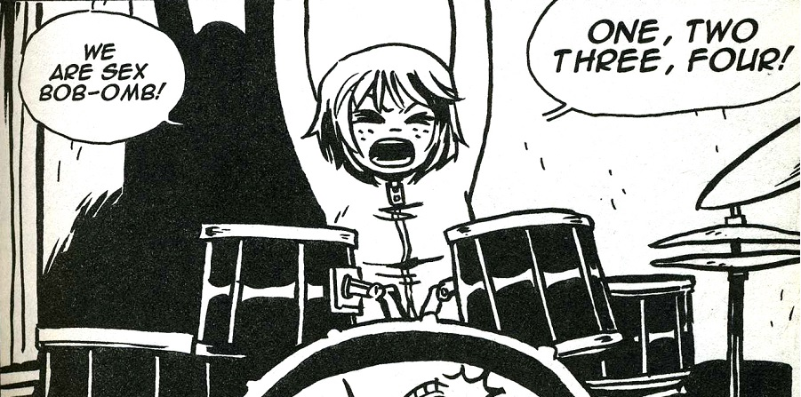

Vamos con el primero de una serie de artículos que van a servir como recopilación de escenas musicales de películas y series. En estos artículos vamos a centrarnos en momentos en que los personajes escuchan e interactúan de algún modo con la música, ya sea bailándola, interpretándola o haciendo el mongo. Estas escenas forman parte de lo que se llama música diegética, o sea la música que escuchan los propios personajes de la película, a diferencia de la extradiegética, que es la banda sonora que no se escucha en el mundo ficticio de la obra y por lo tanto es escuchada solo por el espectador. Por si no es obvio: a partir de ahora puede haber spoilers.
Scott Pilgrim contra el mundo (2010)

«We are Sex Bob-omb!!! 1,2,3,4!!». Uno de los puntos fuertes de la genial adaptación del cómic de Bryan Lee O’Malley son las actuaciones musicales de la banda de los protagonistas: Sex Bob-Omb. El ficticio grupo canadiense toca una serie de canciones compuestas por Beck para la película y que hace que los momentos en que el grupo despliegan todo su potencial garagero sean de los mejores de la película. «¡Somos Sex Bob-omb y hemos venido para que penséis en la muerte y joderos la vida!»
{kind=link}
______
Spintal Tap (1984)
{kind=link}
This is Spinal Tap es un falso documental que parodia el mundo del heavy metal siguiendo el día a día de la banda Spinal Tap, un grupo inventado para la película pero que alcanzó tanto éxito que posteriormente los actores/músicos grabaron varios discos y dieron exitosos conciertos. La película, un clásico imprescindible, se mofa de todos los tópicos del metal clásico a la par que los engrandece y nos hace reír con ellos. Buenísimas estas dos escenas de muestra, con gnomos danzarines incluidos.
______
Ray (2004)
{kind=link}
Esta biografía de Ray Charles, la leyenda del jazz y el rhythm & blues, narra sus inicios y salto a la fama en los años 50 y ofrece una multitud de escenas musicales de gran nivel. Jamie Foxx realizó un trabajo increíble de imitación y con su interpretación ganó el Oscar ese año. Desde las primeras sesiones de grabación en las que sus productores le ayudaron a convertir su jazz pausado en el tifón de energía que le haría famoso hasta sus grandes éxitos posteriores, muchos inspirados por momentos de su dramática vida.
______
Encuentros en la tercera fase (1977)

En los encuentros con ovnis del clásico de ciencia ficción de Steven Spielberg, los testigos parecen escuchar siempre la misma secuencia musical. En la escena final los alienígenas finalmente hacen aterrizar su nave y mantienen un curioso diálogo con los humanos basándose en sonidos y melodías. Spielberg propone la música como lenguaje de comunicación entre la humanidad y los extraterrestres dando lugar a una de las escenas más legendarias de la ciencia ficción. El momento es sobrecogedor.
______
Zatoichi (2003)
{kind=link}
La mítico director japonés Takeshi Kitano mezcla la historia tradicional del samurái ciego Zatoichi con sus habituales toques de comedia y en este caso con algún que otro toque musical que alcanza el culmen en la escena final de la película. Una jam de percusión tradicional japonesa y claqué, afición del cineasta que ya ha aparecido en más de una de sus películas y que da un toque surrealista al final de la película.
______
Un poco de humor
Ace Ventura (1994)

Solo Ace Ventura podía marcarse ese bailecillo en un concierto de Cannibal Corpse. Se rumoreó cuando se estrenó la película que el propio Jim Carrey había pedido la aparición de la banda por ser un gran fan pero luego todo quedó desmentido por su yerno: «For the record, Jim hates death metal… He’d never heard of CANNIBAL until doin’ that movie. Trust me, it’s the first thing I asked him when we met.»
Waynes World (1992)

Hacer el idiota con Bohemian Rhapsody es un clásico entre todos los momentos vergonzosos que se pueden vivir gracias a Queen. Seguro que más de uno habéis hecho esta parida alguna vez. Yo no.
The Big Bang Theory (2007)

Cuando el síndrome de Asperger te da un minuto de tregua todo puede pasar. El Dr. Sheldon Lee Cooper es un gran amante de la música pero por supuesto solo con sus amigos de manera virtual o en solitario de la forma más excéntrica posible como por ejemplo tocando su querido theremin. «Bazinga».
Apoyános